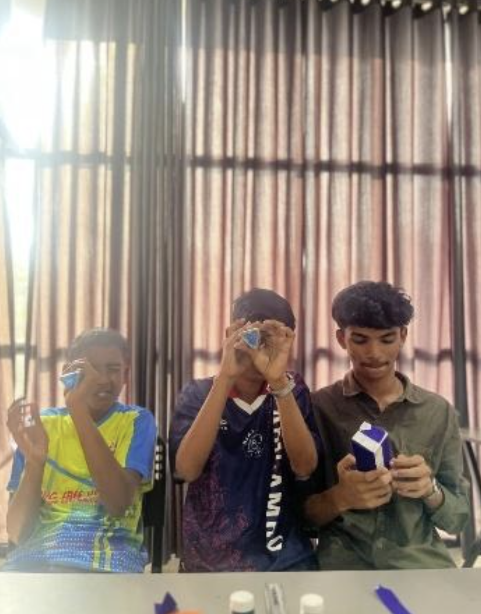

Overview
A session that stepped away from electronics entirely — exploring the science of light and reflection through physical making. Each student built a working periscope and kaleidoscope from scratch using cardboard and mirror tiles.
Topics
How periscopes work — 45° mirror angles
How kaleidoscopes create patterns
Real-world applications — submarines, safety
Laws of reflection — angle in = angle out
Activities
Built periscopes with cardboard at correct 45° angles
Built kaleidoscopes and explored colour patterns
Tested models from different heights and angles
Compared results and shared observations with peers
Photos

Highlights
- Students assembled working models completely independently
- Seeing light reflections inside their own build was a wow moment
- Periscope connected to submarines — real-world application landed
- Creativity on display — every model was uniquely decorated